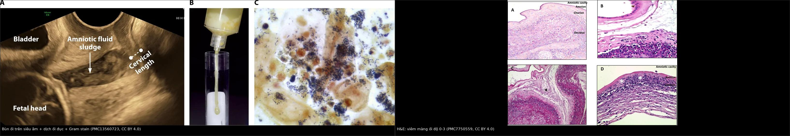
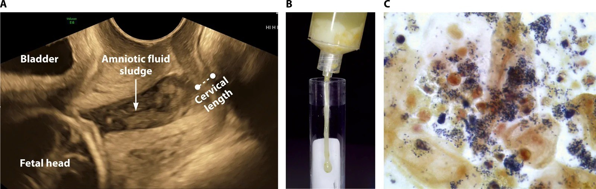
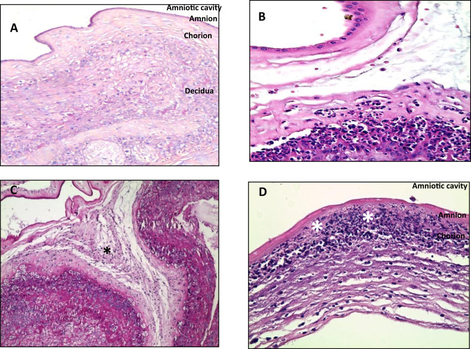
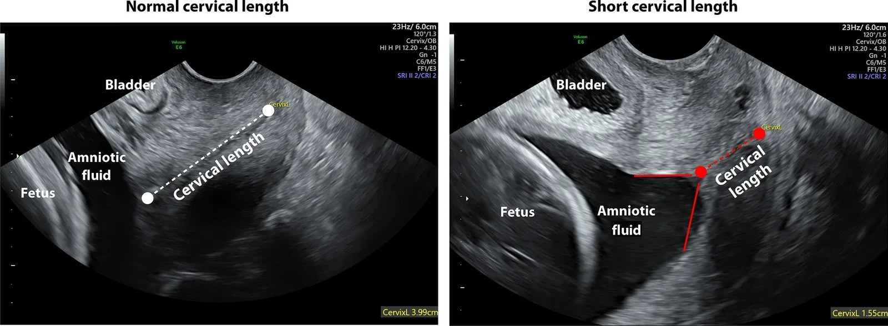

1926 — Viêm màng ối – nhiễm khuẩn ối (chorioamnionitis / Triple I): chẩn đoán bằng lâm sàng + dịch ối, hình ảnh chỉ để khoanh vùng nguy cơ / Chorioamnionitis and intra-amniotic infection
Tags: pattern:viem pattern:dich-oi-duc pattern:co-tu-cung-ngan pattern:hoai-tu vung:manh-oi vung:thai-nhi protocol:sieu-am-dau-do protocol:MRI-thai score:Triple-I
Mức chắc chắn (certainty): tổng hợp y văn (literature synthesis) — ghép tổng quan Clin Microbiol Rev 2026 (PMC13560723: định nghĩa, ngưỡng dịch ối, tần suất nhiễm khuẩn khoang ối), tổng quan Front Med 2023 (PMC10244675: tiêu chuẩn Triple I, phác đồ kháng sinh theo 5 hướng dẫn), nghiên cứu bệnh–chứng Heliyon 2020 (PMC7750559: phân độ mô học màng ối và dây rốn, có ảnh H&E), khảo sát dược lâm sàng 2026 (PMC13159593: tỉ lệ chẩn đoán vượt), đoàn hệ 2024 (PMC10953497: viêm màng ối lâm sàng vs dưới lâm sàng) và nghiên cứu 2025 (PMC12334475: nhiễm khuẩn huyết mẹ khi sốt chuyển dạ). Số nào nguồn không nêu ghi "chưa rõ".
Câu chốt: viêm màng ối là chẩn đoán lâm sàng + xét nghiệm dịch ối, không có hình ảnh nào chẩn đoán được. Ba con số quyết định: 3,9% tổng số sản phụ có viêm màng ối lâm sàng, nhưng 9,1% thai non tháng còn ối và 24% ối vỡ non có vi khuẩn trong khoang ối; chỉ 81,4% ca được điều trị kháng sinh thực sự đủ tiêu chuẩn chẩn đoán (PMC13159593) — nghĩa là chẩn đoán vượt là lỗi thường gặp, trong khi thể dưới lâm sàng lại bị bỏ sót (PMC13560723). Hình ảnh chỉ có 2 việc: đo cổ tử cung và tìm bùn ối để khoanh nguy cơ, cộng loại trừ ổ nhiễm ngoài tử cung.
1. Tổng quan bệnh học – cơ chế hình ảnh
1.1 Vì sao nhiễm trùng đi LÊN và vì sao "chỉ kháng sinh" không đủ (TẠI SAO)
- Đường vào chính là đi lên (ascending): vi khuẩn từ âm đạo – cổ tử cung → màng rụng (decidua) → màng ối → khoang ối → thai. Bốn chặng này giải thích tại sao cổ tử cung ngắn và bùn ối lại là dấu hiệu nguy cơ: cả hai đều là bằng chứng vi khuẩn đã tới cực dưới tử cung (PMC13560723).
- Vì sao vi khuẩn "trú" được dù có kháng sinh: vi khuẩn trong dịch ối tạo màng sinh học (biofilm) bám màng ối và bánh nhau, kháng sinh khó thấm qua; đồng thời không có tuần hoàn hiệu quả trong khoang ối để đưa thuốc tới. Vì vậy lấy thai ra là biện pháp "dẫn lưu ổ nhiễm", còn kháng sinh chỉ để giảm lây sang mẹ và thai trong lúc chờ (PMC10244675).
- Vì sao sốt xuất hiện MUỘN và không đáng tin: sốt là phản ứng toàn thân với nồng độ cytokine trong máu mẹ, không phải với số vi khuẩn tại chỗ; thai non tháng có thể tích khoang ối lớn, ít tế bào viêm nên nhiễm khuẩn khoang ối có thể tiến triển nhiều giờ đến nhiều ngày trước khi mẹ sốt. Vì thế triệu chứng mẹ là chỉ điểm kém nhạy và chẩn đoán xác định cần phân tích dịch ối (PMC13560723).
- Vì sao bạch cầu mẹ khó diễn giải: thai kỳ bình thường đã có bạch cầu 12.000–16.000/mm³ (đôi khi tới 18.000); ngưỡng > 15.000/mm³ của tiêu chuẩn lâm sàng vì thế không đặc hiệu, và giảm đau/gây tê ngoài màng cứng cũng gây sốt do giảm bài tiết nhiệt — đây là nguồn "dương tính giả" lớn nhất tại phòng sinh.
- Vì sao mô học khác lâm sàng: viêm màng ối mô học (histologic chorioamnionitis) là đáp ứng viêm của mẹ (bạch cầu trung tính vào màng ối/đĩa đệm), còn viêm dây rốn (funisitis) là đáp ứng của thai — dấu hiệu nặng hơn vì chứng tỏ vi khuẩn đã vào tuần hoàn thai. Hai thực thể này có thể có mà không có sốt, và ngược lại.
1.2 Vì sao hình ảnh trông như vậy (vật lý từng phương thức)
- Siêu âm đầu dò âm đạo (transvaginal ultrasound): nước ối là dịch đồng nhất, trống âm (anechoic); khi có tế bào viêm, mảnh vụn, vi khuẩn kết tụ thì xuất hiện hạt tăng hồi âm lơ lửng = bùn ối (amniotic fluid sludge), thường nằm ngay trên lỗ trong cổ tử cung. Bùn ối không phải "máu cục" (máu có hồi âm không đều, lắng theo trọng lực) và không phải "bã nhầy" (dính thành, di động chậm).
- Đo chiều dài cổ tử cung: đầu dò âm đạo, bàng quang rỗng, đo lỗ trong → lỗ ngoài theo trục ống cổ tử cung, 3 lần lấy trị số ngắn nhất; hình chữ T = bình thường, chữ Y/U (funneling) = cổ tử cung ngắn + mở lỗ trong. Ngưỡng < 2,5 cm là "ngắn"; trong ca minh họa dưới đây 3,99 cm so với 1,55 cm.
- MRI thai: T2 HASTE/SSFSE cho dịch ối sáng, mô thai trung gian, DWI/ADC đánh giá não thai khi nghi đáp ứng viêm thai nhi (FIRS); nhưng MRI không thấy vi khuẩn và không thay thế chọc ối.
- CT: hạn chế tối đa vì liều tử cung tăng theo tuổi thai; chỉ dùng khi nghi biến chứng ngoài tử cung (áp-xe thận, viêm ruột thừa thủng) mà siêu âm/MRI không giải quyết.
1.3 Ngưỡng định lượng nằm lòng
| Đại lượng | Ngưỡng / con số | Ý nghĩa | Nguồn |
|---|---|---|---|
| Viêm màng ối lâm sàng (toàn bộ sản phụ) | 3,9% | Bệnh lý nhiễm khuẩn hay gặp nhất khi sinh | PMC10244675 |
| Nhiễm khuẩn khoang ối | 9,1% thai non tháng còn ối; 24% ối vỡ non | Tỉ lệ tăng theo mức non tháng | PMC13560723 |
| Thai 23–26 tuần chuyển dạ còn ối | 45% cấy dịch ối dương tính | Càng non càng nhiều vi khuẩn | PMC13560723 |
| Cổ tử cung ngắn không triệu chứng | 9% có nhiễm khuẩn khoang ối dưới lâm sàng | Cổ tử cung ngắn ≠ nhiễm, nhưng là cửa sổ nguy cơ | PMC13560723 |
| Viêm màng ối mô học ở 21–24 tuần | > 94% | Gần như quy luật ở tuổi thai rất non | PMC10244675 |
| Viêm màng ối lâm sàng đủ tháng | 1–3% còn ối; 6–10% ối vỡ | Sốt đơn thuần đủ tháng thường không phải nhiễm | PMC10244675 |
| sốt được xác nhận | ≥ 39,0 °C một lần, hoặc 38,0–38,9 °C đo lại sau 30 phút vẫn ≥ 38,0 °C | Định nghĩa "documented fever" của Triple I | PMC10244675 |
| Viêm khoang ối (dịch ối) | BC ≥ 50 tế bào/mm³, hoặc IL-6 ≥ 2,6 ng/mL, hoặc MMP-8 > 23 ng/mL | Tiêu chuẩn xét nghiệm, không phải hình ảnh | PMC13560723 |
| Đáp ứng viêm thai nhi (FIRS) | IL-6 dây rốn ≥ 11 pg/mL | Tiên lượng xấu: loạn sản phế quản, bạch sản quanh não thất | PMC13560723 |
| Nguy cơ nhiễm khuẩn huyết sơ sinh sớm | ≈ 5 lần so với trẻ không phơi nhiễm | Lý do phải khám nhi ngay | PMC13560723 |
| Chẩn đoán vượt | Chỉ 81,4% ca được điều trị đủ tiêu chuẩn | Lỗi thực hành phổ biến | PMC13159593 |
| Nguy cơ kết cục thai xấu | Tăng 2–3,5 lần khi có viêm màng ối | Không phụ thuộc thời gian nhiễm | PMC10244675 |
2. Mẫu hình + chẩn đoán phân biệt theo vị trí (gamut)
Mẫu hình chính: sốt trong chuyển dạ / thai non tháng có cơn co + cổ tử cung ngắn ± bùn ối → nghĩ viêm màng ối. Gamut dưới đây xếp theo vị trí ổ nhiễm — vì hình ảnh chỉ có giá trị khi nó trả lời "ổ này ở đâu".
- Khoang ối – màng ối (trong tử cung): viêm màng ối do vi khuẩn đi lên (E. coli, GBS, Ureaplasma/Mycoplasma, Bacteroides) — sốt + cơn co + cổ tử cung ngắn/bùn ối.
- Đường niệu trên: viêm thận–bể thận/urosepsis (bài 1924) — đau hông lưng, ấn đau góc sườn–cột sống, 78% không sốt lúc vào viện, ứ nước trên siêu âm.
- Ruột thừa: viêm ruột thừa trong thai (bài 145) — đau hố chậu phải cao hơn do tử cung đẩy, ruột thừa > 6 mm, không đè xẹp.
- Túi mật – đường mật: viêm túi mật cấp (bài 1925) — Murphy, thành túi mật > 3 mm, sỏi; viêm đường mật (bài 1929) — vàng da, giãn ống mật chủ.
- Phổi: viêm phổi (bài 031) — ho, đờm, đám mờ trên X-quang; cúm/COVID có thể gây sốt + suy hô hấp mà không có ổ bụng.
- Bánh nhau: nhau bong non — tử cung căng đau, ra máu âm đạo, sốt thường nhẹ/vắng; siêu âm có thể bình thường, chẩn đoán là lâm sàng + monitoring thai.
- Ngoài ổ nhiễm: sốt do gây tê ngoài màng cứng, mất nước, thuốc, cường giáp — không có ổ, không đáp ứng kháng sinh, và không cần mổ.
- Sau sinh (khác bài này): viêm nội mạc tử cung — sốt sau sinh ≥ 24 giờ, tử cung mềm đau, sản dịch hôi; điều trị khác hẳn (clindamycin + gentamicin).
3. Bảng so sánh phân biệt (ma trận đối chiếu)
| Thực thể (entity) | Hình ảnh / xét nghiệm điển hình | Chốt vào (rule-in) | Chốt loại (rule-out) | Gợi ý xác nhận |
|---|---|---|---|---|
| Viêm màng ối – nhiễm khuẩn ối | Cổ tử cung < 2,5 cm ± bùn ối; dịch ối BC ≥ 50/mm³, IL-6 ≥ 2,6 ng/mL; cấy/PCR dương | Sốt ≥ 39,0 °C hoặc 38,0–38,9 °C đo lại sau 30 phút + ≥ 1 dấu hiệu (nhịp tim thai > 160 ≥ 10 phút, BC > 15.000/mm³, dịch cổ tử cung mủ/hôi) | Sốt có ổ rõ ràng ngoài tử cung + dịch ối BC < 50/mm³, IL-6 < 2,6 ng/mL, cấy âm → không phải viêm khoang ối | Chọc ối (khi non tháng, còn ối); cấy + PCR 16S |
| Sốt do gây tê ngoài màng cứng / sốt đơn thuần | Không có ổ; bùn ối vắng, cổ tử cung bình thường; BC 12.000–15.000 (nền thai kỳ) | Sốt xuất hiện sau đặt catheter, không nhịp tim thai nhanh, không đau tử cung, hết sốt khi hạ sốt/ngừng thuốc | Nhịp tim thai > 160 kéo dài + dịch cổ tử cung mủ + BC tăng dần → không được coi là "sốt vô khuẩn" | Đo lại nhiệt độ trực tràng, theo dõi 30–60 phút, không vội kháng sinh |
| Viêm thận–bể thận / urosepsis | Thận to, ứ nước, sỏi; CT liều thấp thấy sỏi; cấy nước tiểu dương | Đau hông lưng + ấn đau góc sườn–cột sống + cấy nước tiểu dương | Không đau hông, không ứ nước, cấy nước tiểu âm → loại | Siêu âm thận–niệu quản; cấy máu + nước tiểu |
| Viêm ruột thừa | Ruột thừa > 6 mm, không đè xẹp, dịch quanh; MRI không cản từ nếu siêu âm mờ | Đau hố chậu phải cao + ấn đau khu trú + ruột thừa không đè xẹp | Ruột thừa đè xẹp được, không dịch → loại | Siêu âm → MRI; CT liều thấp khi cần |
| Viêm túi mật cấp | Sỏi + thành túi mật > 3 mm + dịch quanh túi + Murphy siêu âm | Đau hạ sườn phải + Murphy + sỏi + thành dày | Thành < 3 mm, không sỏi, không dịch → loại | Siêu âm bụng (bài 1925) |
| Nhau bong non | Siêu âm có thể bình thường; khối máu sau bánh nhau là dấu hiệu không nhạy | Tử cung căng đau + ra máu + bất thường tim thai | Cơn co thưa, không ra máu, tim thai bình thường → ít nghĩ | Monitoring thai liên tục; siêu âm chỉ hỗ trợ |
| Viêm phổi / cúm / COVID | Đám mờ, tree-in-bud, đông đặc; X-quang ngực | Ho, khó thở, SpO₂ giảm + đám mờ | Phổi sạch, không thiếu oxy → loại | X-quang ngực; PCR virus |

Hình 1 — Trái: siêu âm đầu dò âm đạo, mũi tên chỉ bùn ối (hạt tăng hồi âm lơ lửng trên lỗ trong cổ tử cung); kèm ảnh dịch ối đục hút ra và Gram stain nhiều bạch cầu + cầu khuẩn Gram dương. Phải: H&E màng ối — (A) bình thường, (B) viêm màng đệm độ 1, (C) viêm màng ối độ 2 (bạch cầu vào mô liên kết ối, dấu *), (D) viêm màng ối hoại tử độ 3 (hoại tử biểu mô ối, dấu *). Nguồn: PMC13560723 Fig. 6 và PMC7750559 Fig. 1, CC BY 4.0; ảnh ghép letterbox, không crop/kéo giãn.Đọc đúng 2 dấu hiệu hình ảnh
- Bùn ối (amniotic fluid sludge): định nghĩa là khối hạt tăng hồi âm, lơ lửng tự do trong khoang ối, thường sát lỗ trong cổ tử cung, ở người còn ối. Đây là dấu hiệu của viêm/nhiễm khoang ối, chuyển dạ non tháng sắp xảy ra và viêm màng ối, nhưng không đặc hiệu cho vi khuẩn — bùn ối vô khuẩn vẫn có (PMC13560723).
- Cổ tử cung ngắn + funneling: nguy cơ nhiễm khuẩn khoang ối tăng khi chiều dài giảm; ở người không triệu chứng với cổ tử cung ngắn, 9% đã có nhiễm khuẩn dưới lâm sàng. Vì vậy cổ tử cung ngắn là chỉ định cân nhắc chọc ối ở thai non tháng, không phải chỉ định mổ.
4. Protocol + phân độ + quyết định
4.1 Chẩn đoán (không có hình ảnh nào thay được)
- Nhiệt độ: đo miệng/trực tràng, nếu 38,0–38,9 °C thì đo lại sau 30 phút; ≥ 39,0 °C một lần đã đủ.
- Tìm ổ ngoài tử cung trước khi kết luận: cấy máu, cấy nước tiểu, X-quang ngực, siêu âm thận – túi mật – ruột thừa khi có định hướng.
- Đánh giá thai: monitoring tim thai liên tục (nhịp tim thai > 160/phút ≥ 10 phút là tiêu chuẩn), đếm cơn co, siêu âm chiều dài cổ tử cung + bùn ối.
- Chọc ối (khi còn ối, thai non tháng, còn cửa sổ điều trị): gửi đếm tế bào, glucose, IL-6/MMP-8, Gram stain, cấy + PCR 16S — kết quả định hướng kháng sinh và tránh điều trị mù (PMC13560723).
4.2 Phân độ mô học (khi có bánh nhau)
| Phân độ | Mô học | Ý nghĩa |
|---|---|---|
| Mẹ – độ 1 | Viêm màng đệm (chorionitis): bạch cầu giới hạn ở mô đệm màng đệm | Đáp ứng mẹ, nhẹ |
| Mẹ – độ 2 | Viêm màng ối: bạch cầu vào mô liên kết màng ối | Đáp ứng mẹ, rõ |
| Mẹ – độ 3 | Viêm màng ối hoại tử: hoại tử biểu mô ối | Nặng, nguy cơ cao |
| Thai – độ 1 | Viêm tĩnh mạch rốn | Đáp ứng thai, sớm |
| Thai – độ 2 | Viêm động mạch rốn | Đáp ứng thai, muộn/nặng |
4.3 Điều trị: kháng sinh + LẤY THAI là điều trị ổ nhiễm
flowchart TD
A[Sốt trong chuyển dạ hoặc thai non tháng có cơn co] --> B{Đo lại nhiệt độ và tìm ổ nhiễm ngoài tử cung}
B -->|Có ổ rõ: niệu, ruột thừa, túi mật, phổi| C[Điều trị theo ổ đó]
B -->|Không có ổ| D{Sốt ≥ 39,0 một lần hoặc 38,0 đến 38,9 đo lại sau 30 phút vẫn cao}
D -->|Không| E[Theo dõi 30 đến 60 phút, không kháng sinh mù]
D -->|Có| F{Có ≥ 1 dấu hiệu: tim thai trên 160, BC trên 15000, dịch cổ tử cung mủ}
F -->|Không| G[Sốt đơn thuần: hạ sốt, theo dõi, cấy]
F -->|Có| H[Khởi động kháng sinh ngay: ampicillin 2 g mỗi 6 giờ + gentamicin 5 mg/kg mỗi 24 giờ]
H --> I[Lấy thai: khởi phát hoặc tăng cường chuyển dạ]
I --> J[Mổ lấy thai chỉ vì chỉ định sản khoa]
J --> K[Sau sinh: không tự động kéo dài kháng sinh; đánh giá viêm nội mạc tử cung]
- Kháng sinh (ACOG): ampicillin 2 g IV mỗi 6 giờ + gentamicin 5 mg/kg IV mỗi 24 giờ; dị ứng penicillin nặng: clindamycin 900 mg mỗi 8 giờ hoặc vancomycin 1 g mỗi 12 giờ + gentamicin (PMC10244675). Các hướng dẫn khác (NICE, Pháp, Tây Ban Nha, Slovenia) dùng phác đồ tương đương — không có bằng chứng phác đồ nào trội hơn.
- Thời điểm lấy thai: khởi phát hoặc tăng cường chuyển dạ ngay; mổ lấy thai chỉ vì chỉ định sản khoa, vì mổ trên nền viêm màng ối làm tăng huyết khối tĩnh mạch, viêm nội cơ tử cung và nhiễm vết mổ (PMC10244675).
- Sau sinh: không tự động kéo dài kháng sinh; chỉ kéo dài khi có yếu tố nguy cơ viêm nội mạc tử cung (mổ lấy thai, chuyển dạ kéo dài, béo phì) (PMC10244675).
- Trẻ sơ sinh: phơi nhiễm làm tăng nhiễm khuẩn huyết sớm ≈ 5 lần; khám + theo dõi sát, không chọc dò tủy sống thường quy ở trẻ không triệu chứng, kháng sinh theo thuật toán sơ sinh (PMC13560723).
5. Biến thể bình thường và cạm bẫy
- "Sốt là phải kháng sinh": sai. Sốt đơn thuần (không đủ tiêu chuẩn) gặp ở gây tê ngoài màng cứng, mất nước, thuốc; điều trị mù làm tăng kháng thuốc và loạn khuẩn — và chỉ 81,4% ca được điều trị thực sự đủ tiêu chuẩn (PMC13159593).
- Bỏ sót thể dưới lâm sàng: 9,1% thai non tháng còn ối và 24% ối vỡ non có vi khuẩn mà mẹ không sốt; ở 21–24 tuần, viêm màng ối mô học > 94% (PMC13560723, PMC10244675). Đừng chờ sốt ở thai rất non.
- Bạch cầu nền của thai kỳ: 12.000–16.000/mm³ là bình thường; ngưỡng 15.000 vì thế không đủ một mình để chẩn đoán hay loại trừ.
- Bùn ối vô khuẩn: bùn ối là dấu hiệu viêm, không đồng nghĩa nhiễm khuẩn; vẫn cần dịch ối (BC, IL-6, cấy/PCR) trước khi kết luận.
- Cổ tử cung ngắn không phải chỉ định mổ: đây là yếu tố nguy cơ, không phải chẩn đoán; xử trí gồm progesterone/đặt vòng nâng cổ tử cung theo chỉ định sản khoa, không phải "mổ ngay".
- Sốt do gây tê và sốt thật chồng lấp: gây tê ngoài màng cứng làm giảm bài tiết nhiệt; nhưng nhịp tim thai > 160 kéo dài hoặc dịch cổ tử cung mủ thì không được quy cho gây tê.
- Nhau bong non "giả viêm": bánh nhau hoại tử có thể gây sốt nhẹ + bạch cầu tăng; nếu chỉ nhìn xét nghiệm sẽ điều trị kháng sinh oan và bỏ sót thai suy.
- Sau sinh đừng nhầm viêm nội mạc tử cung: sốt sau sinh ≥ 24 giờ, tử cung mềm đau, sản dịch hôi → phác đồ khác (clindamycin + gentamicin), không phải "tiếp tục phác đồ chuyển dạ".
6. Tự lượng giá — Blind Quiz
Ca 1 — Thai 27 tuần, cơn co mỗi 5 phút, không sốt, không ra máu. Siêu âm đầu dò âm đạo: cổ tử cung 1,55 cm, có hạt tăng hồi âm trên lỗ trong.

- Câu hỏi: (1) Mũi tên chỉ gì? (2) Nó nói lên điều gì và không nói lên điều gì? (3) Bước tiếp theo để quyết định kháng sinh?
Bấm để hiện đáp án (findings + chẩn đoán)
- Findings: (A) siêu âm âm đạo — bùn ối: hạt tăng hồi âm lơ lửng ngay trên lỗ trong cổ tử cung, trước đầu thai; (B) dịch ối hút ra đục, vàng nhạt; (C) Gram stain — nhiều bạch cầu trung tính và cầu khuẩn Gram dương.
- Chẩn đoán: viêm/nhiễm khoang ối dưới lâm sàng trên nền cổ tử cung ngắn — bùn ối là dấu hiệu viêm, chưa chứng minh vi khuẩn.
- Bước tiếp theo: chọc ối (còn ối) gửi BC, glucose, IL-6, Gram stain, cấy + PCR; kèm corticosteroid nếu 24–34 tuần và magie sulfate bảo vệ não thai theo chỉ định sản khoa. Không mổ lấy thai chỉ vì bùn ối.
- Nguồn ảnh: Clin Microbiol Rev 2026, PMC13560723, Fig. 6, CC BY 4.0.
Ca 2 — Bánh nhau của thai 24 tuần sinh non, mẹ KHÔNG sốt. Đọc H&E màng ối.

- Câu hỏi: (1) Xếp độ cho từng ảnh? (2) Vì sao mẹ không sốt mà vẫn có tổn thương? (3) Ý nghĩa tiên lượng?
Bấm để hiện đáp án (findings + chẩn đoán)
- Findings: (A) màng ối bình thường, không có bạch cầu; (B) viêm màng đệm độ 1 — bạch cầu giới hạn ở mô đệm màng đệm; (C) viêm màng ối độ 2 — bạch cầu đã vào mô liên kết màng ối (dấu *); (D) viêm màng ối hoại tử độ 3 — hoại tử biểu mô ối (dấu *).
- Vì sao không sốt: viêm màng ối mô học là đáp ứng tại chỗ của mẹ, có thể không đủ cytokine toàn thân để gây sốt — đúng lý do triệu chứng mẹ là chỉ điểm kém nhạy.
- Tiên lượng: độ càng cao + có viêm dây rốn (đáp ứng thai) càng tăng nguy cơ nhiễm khuẩn huyết sớm, loạn sản phế quản, bạch sản quanh não thất.
- Nguồn ảnh: Heliyon 2020, PMC7750559, Fig. 1, CC BY 4.0.
Ca 3 — Thai 39 tuần, đã gây tê ngoài màng cứng 3 giờ, nhiệt độ 38,4 °C; tim thai 140/phút, không đau tử cung, bạch cầu 14.000/mm³. Xử trí?

- Câu hỏi: (1) Đủ tiêu chuẩn viêm màng ối chưa? (2) Việc đầu tiên? (3) Khi nào mới dùng kháng sinh?
Bấm để hiện đáp án (findings + chẩn đoán)
- Findings: ảnh so sánh cổ tử cung bình thường 3,99 cm (chữ T) với cổ tử cung ngắn 1,55 cm + funneling chữ Y — công cụ đo nguy cơ, không chẩn đoán nhiễm.
- Đánh giá: 38,4 °C nhưng chưa đo lại → chưa phải "documented fever"; không nhịp tim thai nhanh, không đau tử cung, BC 14.000 (trong nền thai kỳ) → chưa đủ tiêu chuẩn viêm màng ối.
- Việc đầu tiên: đo lại nhiệt độ sau 30 phút (miệng/trực tràng), tìm ổ nhiễm (cấy máu, cấy nước tiểu), tiếp tục monitoring thai; hạ sốt bằng paracetamol.
- Khi nào kháng sinh: nếu đo lại vẫn ≥ 38,0 °C → sốt được xác nhận; thêm bất kỳ dấu hiệu nào (tim thai > 160 ≥ 10 phút, BC > 15.000, dịch cổ tử cung mủ) → khởi động ampicillin + gentamicin và lấy thai.
- Bài học: đây là nhóm "sốt đơn thuần" — điều trị mù ở nhóm này là lý do chỉ 81,4% ca được điều trị đủ tiêu chuẩn.
- Nguồn ảnh: PMC13560723, Fig. 4, CC BY 4.0.
Bài liên quan chéo
- 500 – Tổng quan hệ Vú & Sản phụ khoa
- 1924 – Sốc nhiễm khuẩn từ đường niệu ở thai phụ: sốt vắng 78%, giải áp 6–12 giờ
- 1925 – Viêm túi mật cấp ở thai phụ: TG18, cắt nội soi bất kể tam cá nguyệt
- 1921 – Nhiễm khuẩn niệu không triệu chứng & viêm thận–bể thận cấp ở thai phụ
- 145 – Viêm ruột thừa trong thai kỳ
- 1817 – Đau bụng cấp ở thai phụ: protocol MRI không cản từ
Ảnh
1926_viem-mang-oi_US_PMC13560723-Fig6.jpg— siêu âm bùn ối + dịch ối đục + Gram stain (PMC13560723, Fig. 6, CC BY 4.0).1926_viem-mang-oi_US-co-tu-cung_PMC13560723-Fig4.jpg— đo chiều dài cổ tử cung: bình thường 3,99 cm vs ngắn 1,55 cm + funneling (PMC13560723, Fig. 4, CC BY 4.0).1926_viem-mang-oi_HE_PMC7750559-Fig1.jpg— H&E phân độ viêm màng ối 0–3 (PMC7750559, Fig. 1, CC BY 4.0).1926_viem-mang-oi_HE-funisitis_PMC7750559-Fig2.jpg— H&E phân độ viêm dây rốn (PMC7750559, Fig. 2, CC BY 4.0).composite_chan-doan.jpg— ảnh ghép letterbox (PMC13560723 Fig. 6 + PMC7750559 Fig. 1), CC BY 4.0.
Không dùng để chẩn đoán độc lập khi chưa có người hướng dẫn.